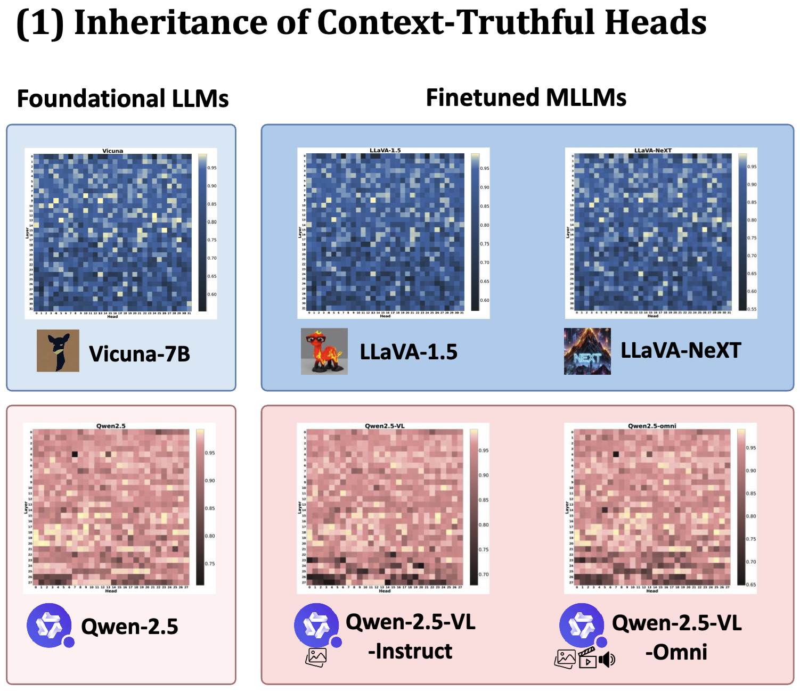
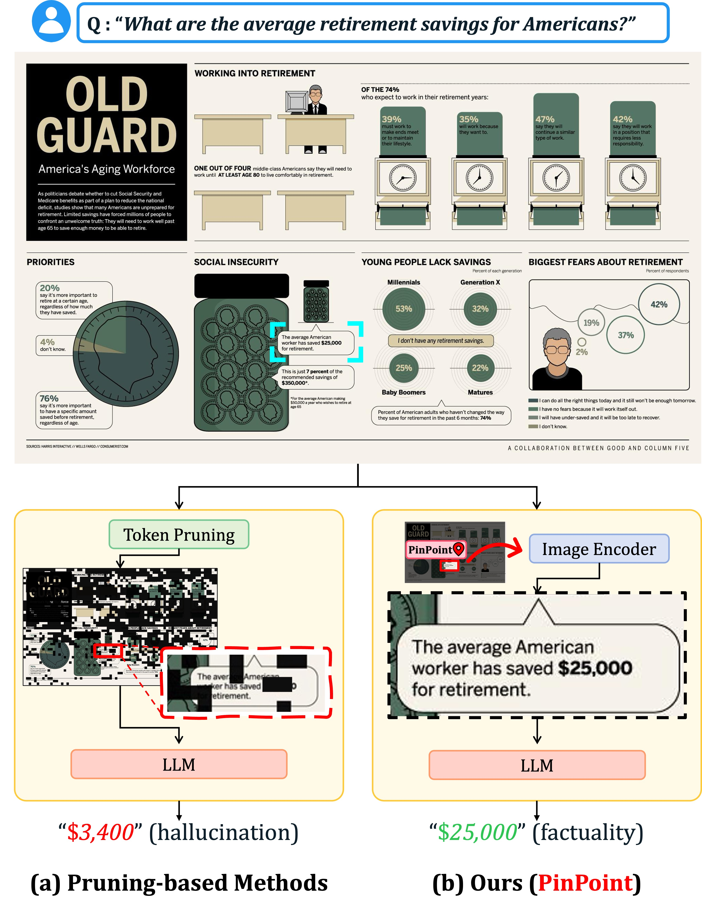
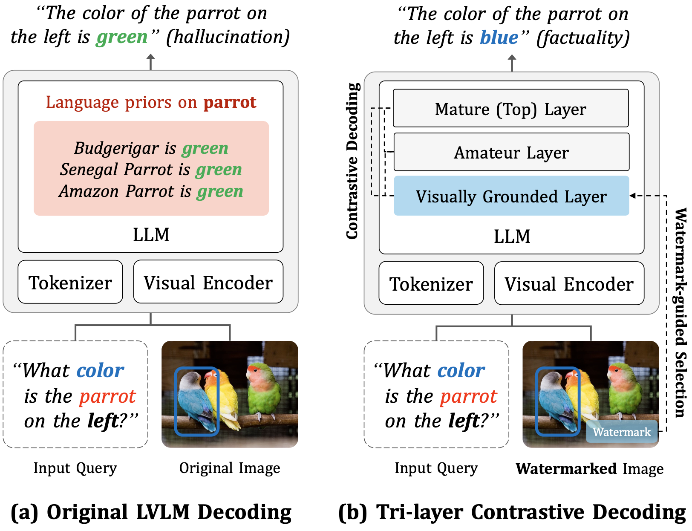
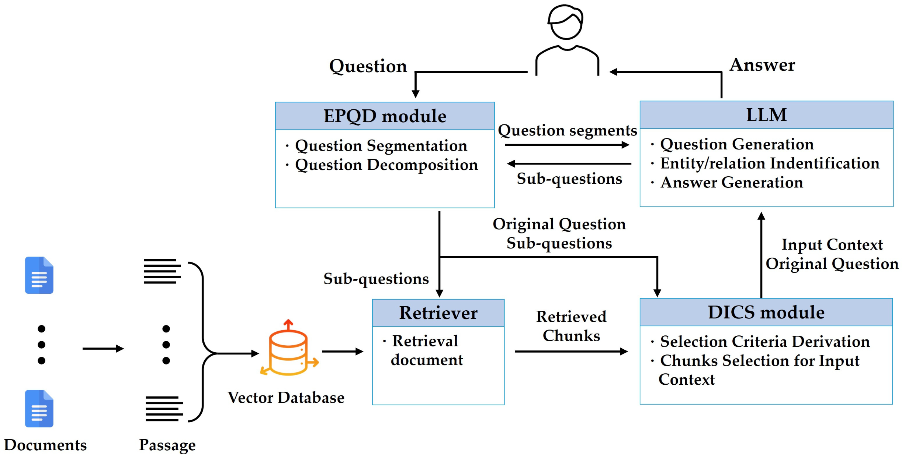

|
Mincheol Kwon Hello! I am a Master's student at Korea University, co-advised by Prof. Jinkyu Kim and Prof. Jungbeom Lee, and working in collaboration with Prof. Synho Do (Harvard Medical School) and Prof. Seunghyun Park (Soongsil University). I enjoy identifying the fundamental problems of AI and working toward solving them. Email / CV / Google Scholar / GitHub / LinkedIn |

|
News
|
ResearchMy research interests include Vision-Language Models (VLMs), World Models, and Vision-Language-Action (VLA) models. |
|
 |
The Truth Stays in the Family: Enhancing Contextual Truthfulness via Inherited Heads in
Model Lineages
Miso Choi, Seonga Choi, Mincheol Kwon, Woosung Jung, Jinkyu Kim International Conference on Machine Learning (ICML), 2026 arXiv / code |
|
 |
Focus, Don't Prune: Identifying Instruction-Relevant Regions for Information-Rich Image
Understanding
Mincheol Kwon, Minseung Lee, Seonga Choi, Miso Choi, Kyeong-Jin Oh, Hyunyoung Lee, Cheonyoung Park, Yongho Song, Seunghyun Park, Jinkyu Kim The IEEE/CVF Conference on Computer Vision and Pattern Recognition (CVPR), 2026, Denver CO, USA. (Acceptance Rate: 25.4%) project page / arXiv / code |
|
 |
Watermarking for Factuality: Guiding Vision-Language Models Toward Truth via Tri-layer
Contrastive Decoding
Kyungryul Back, Seongbeom Park, Milim Kim, Mincheol Kwon, SangHyeok Lee, Hyunyoung Lee, Junhee Cho, Seunghyun Park, Jinkyu Kim Empirical Methods in Natural Language Processing (EMNLP Findings), 2025 arXiv / code |
|
 |
A Dynamic-Selection-Based, Retrieval-Augmented Generation Framework: Enhancing
Multi-Document Question-Answering for Commercial Applications
Mincheol Kwon*, Jimin Bang*, Seyoung Hwang*, Junghoon Jang, Woosin Lee Electronics, vol.14, MDPI, 2025 paper / code |
|
Design based on Jon Barron's website. |